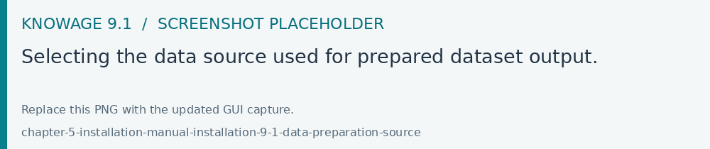

Manual installation
Prepare JDK 17, Tomcat 9, a metadata database and a cache database as described in Requirements. Obtain all application packages from the same 9.1.0 distribution; see Get the Knowage 9.1 packages.
Metadata initialization
Create an empty schema and run the creation and Quartz scripts matching its DBMS from the v9.1.0 source tree. Inspect the supplied scripts and their execution order before running them. Assign the application database account the privileges required by those scripts and the application’s runtime work.
For an existing schema, use How to upgrade KNOWAGE instead of initialization.
Tomcat and JNDI resources
Using Tomcat
Dependencies
You must add required libraries into TOMCAT_HOME/lib folder:
the JDBC connector for the metadata database with its dependencies (if any);
the JDBC connector for the business data database with its dependencies (if any);
the commonj library with its dependencies:
Important
Enterprise Edition only
To enable the Import/Export capability, please also add the JDBC connector for HyperSQLDB , taking care of using version 1.8.0.2 .
File system resources
Create the folder TOMCAT_HOME/resources. Such a folder will contain some useful static resources and the indexes for the search engine used by Knowage.
Connection to metadata database
To define connection towards metadata database, edit the TOMCAT_HOME/conf/server.xml and add the information related to the metadata database inside the GlobalNamingResources tag. Specify: username, password, driver class name, JDBC URL and validation query (any valid query to be executed to validate connections). Connection’s name must the jdbc/knowage:
1 <Resource auth="Container"
2 driverClassName="JDBC driver"
3 name="jdbc/knowage"
4 password="password"
5 type="javax.sql.DataSource"
6 url="JDBC URL"
7 username="username"
8 validationQuery="validation query"
9 maxTotal="50"
10 maxIdle="50"
11 minIdle="10"
12 validationInterval="34000"
13 removeAbandoned="true"
14 removeAbandonedTimeout="3600"
15 logAbandoned="true"
16 testOnBorrow="true"
17 testWhileIdle="true"
18 timeBetweenEvictionRunsMillis="10000"
19 minEvictableIdleTimeMillis="60000" />
Cache database connection
In some scenarios (for example when defining a cockpit document on top of a file dataset), Knowage requires a database to be used as cache. It is highly recommended to create an empty database schema for this purpose. Then, you need to configure it inside TOMCAT_HOME/conf/server.xml as you did for metadata database. Feel free to type a name of your choice, in this example we used jdbc/ds_cache:
1 <Resource auth="Container"
2 driverClassName="JDBC driver"
3 name="jdbc/ds_cache"
4 password="password"
5 type="javax.sql.DataSource"
6 url="JDBC URL"
7 username="user name"
8 validationQuery="validation query"
9 maxTotal="50"
10 maxIdle="50"
11 minIdle="10"
12 validationInterval="34000"
13 removeAbandoned="true"
14 removeAbandonedTimeout="3600"
15 logAbandoned="true"
16 testOnBorrow="true"
17 testWhileIdle="true"
18 timeBetweenEvictionRunsMillis="10000"
19 minEvictableIdleTimeMillis="60000" />
Connection to business data
Edit the TOMCAT_HOME/conf/server.xml and add the information related to the database containing business data to be analysed by Knowage inside the GlobalNamingResources tag, specifying username, password, driver class name, URL and validation query. Feel free to type a name of your choice, in this example we used jdbc/dwh:
1 <Resource auth="Container"
2 driverClassName="JDBC driver"
3 name="jdbc/dwh"
4 password="password"
5 type="javax.sql.DataSource"
6 url="JDBC URL"
7 username="username"
8 validationQuery="validation query"
9 maxTotal="50"
10 maxIdle="50"
11 minIdle="10"
12 validationInterval="34000"
13 removeAbandoned="true"
14 removeAbandonedTimeout="3600"
15 logAbandoned="true"
16 testOnBorrow="true"
17 testWhileIdle="true"
18 timeBetweenEvictionRunsMillis="10000"
19 minEvictableIdleTimeMillis="60000"
20 factory="org.apache.tomcat.jdbc.pool.DataSourceFactory" />
Environment variables definition
Edit the file TOMCAT_HOME/conf/server.xml in Tomcat and add the following constants in the GlobalNamingResources tag.
1 <Environment name="resource_path" type="java.lang.String" value="${catalina.home}/resources" />
2 <Environment name="sso_class" type="java.lang.String" value="it.eng.spagobi.services.common.JWTSsoService" />
3 <Environment name="service_url" type="java.lang.String" value="http://localhost:8080/knowage" />
4 <Environment name="hmacKey" description="HMAC key" type="java.lang.String" value="PUT ANY RANDOM STRING HERE" />
5 <Environment name="password_encryption_secret" description="File for security encryption location" type="java.lang.String" value="complete_file_path_with_file_name" />
Such environment variables have the following meaning:
resource_path: resources folder path,sso_class:SSO connector class name,service_url:backend services address, typically set tohttp://localhost:8080/knowage,hmacKey: secret key to generate JWT tokens used by the default security mechanism. You must change it, and do not distribute it. You can put any random alphanumeric string in it, and you can change it everytime you want, you just need to restart Tomcat to apply the change,password_encryption_secret: the complete path of a file to contain the password encryption secret. The file must contain random text of any length. This is a security configuration, so don’t use short strings. For example, you can create a file and write text into it. Do not distribute it for any reason, create at least a backup copy of the file. After the first start of Knowage, it will no longer be possible to change the secret key. In case you lost this secret, look at the paragraph below to see how to update the passwords of existing users.
Important
Again we stress the point that the HMAC key must be a random string. Please DO NOT copy and paste it from this documentation, since this will compromise the security of the application.
Below you can see an example of configuration of the above variables in the server.xml file
1 <Environment name="resource_path" type="java.lang.String" value="${catalina.home}/resources"/>
2 <Environment name="sso_class" type="java.lang.String" value="it.eng.spagobi.services.common.JWTSsoService"/>
3 <Environment name="service_url" type="java.lang.String" value="http://mydomain.com/knowage"/>
4 <Environment name="hmacKey" description="HMAC key" type="java.lang.String" value="a random string"/>
5 <Environment name="password_encryption_secret" description="File for security encryption location" type="java.lang.String" value="${catalina.home}/conf/knowage.secret"/>
Changing the secret key for password encryption
The password encryption secret key must be set during the installation and cannot be changed anymore, otherwise Knowage will no longer be able to authenticate already defined users. In case the secret key is lost you must create a new one, configure it into Knowage as described above and update passwords of existing users direclty into Knowage metadata database (SBI_USER table). For this reason Knowage provides you a tool to get new encrypted values.
This tool is a Java class that is shipped with the knowage-utils library; it accepts 2 input parameters:
the complete path of the password encryption secret file;
the password value in plaintext.
Below is an example of invoking the tool by command line using ‘mypassword’ as the plaintext password to be encrypted (of course TOMCAT_HOME must be replaced by the actual Tomcat base folder path).
1java -cp "<TOMCAT_HOME>/webapps/knowage/WEB-INF/lib/knowage-utils-7.2.0.jar" it.eng.spagobi.security.utils.PasswordEncryptionToolMain <TOMCAT_HOME>/conf/knowage.secret mypassword
This procedure must be repeated for all already existing users.
Mandatory configuration
[LINUX] Edit the TOMCAT_HOME/conf/setenv.sh file in Tomcat by adding the following JVM arguments:
1 export JAVA_OPTS="$JAVA_OPTS -Dsymmetric_encryption_key=<generic_random_string>"
The symmetric_encryption_key is required to encrypt/decrypt the JDBC data source password. Its value must be a generic ASCII string with at least one character.
[WIN] Edit the TOMCAT_HOME/conf/setenv.bat file in Tomcat by adding the following JVM arguments:
1 export JAVA_OPTS="$JAVA_OPTS -Dsymmetric_encryption_key=<generic_random_string>"
The symmetric_encryption_key is required to encrypt/decrypt the JDBC data source password. Its value must be a generic ASCII string with at least one character.
Recommended configuration
[LINUX] Edit the TOMCAT_HOME/conf/setenv.sh file in Tomcat by adding the following JVM arguments:
1 export JAVA_OPTS="$JAVA_OPTS -Dfile.encoding=UTF-8"
2
3 # We add -Duser.timezone=UTC to solve error when establishing connection to Oracle metadata database:
4 # java.sql.SQLException: ORA-00604: error occurred at recursive SQL level 1
5 # ORA-01882: timezone region not found
6
7 export JAVA_OPTS="$JAVA_OPTS -Duser.timezone=UTC"
8
9 export JAVA_OPTS="$JAVA_OPTS -Djava.awt.headless=true"
10
11 export JAVA_OPTS="$JAVA_OPTS -Djava.security.manager -Djava.security.policy=$CATALINA_HOME/conf/knowage-default.policy"
[WIN] Edit the TOMCAT_HOME/conf/setenv.bat file in Tomcat by adding the following JVM arguments:
1 export JAVA_OPTS="$JAVA_OPTS -Dfile.encoding=UTF-8"
2
3 # We add -Duser.timezone=UTC to solve error when establishing connection to Oracle metadata database:
4 # java.sql.SQLException: ORA-00604: error occurred at recursive SQL level 1
5 # ORA-01882: timezone region not found
6
7 export JAVA_OPTS="$JAVA_OPTS -Duser.timezone=UTC"
8
9 export JAVA_OPTS="$JAVA_OPTS -Djava.awt.headless=true"
10
11 export JAVA_OPTS="$JAVA_OPTS -Djava.security.manager -Djava.security.policy=%CATALINA_HOME%\conf\knowage-default.policy"
Applications deploy
To deploy Knowage you have to copy all the WAR files inside the TOMCAT_HOME/webapps folder.
Once the first start is ended each WAR file will be unzipped. It is also possible to unzip the WAR files manually using the unzip utility.
Thread pool definition
You must configure TOMCAT_HOME/conf/server.xml file and add the settings related to the pool of thread editing the GlobalNamingResources tag, as shown follow.
1 <Resource auth="Container" factory="de.myfoo.commonj.work.FooWorkManagerFactory" maxThreads="5" name="wm/SpagoWorkManager" type="commonj.work.WorkManager"/>
Advanced memory settings
It is recommended to increase the memory dimension used by the application server. This can be done by adjusting some properties. The memory required by each application server depends on many factors: number of users, type of analyses, amount of handled data, etc. The minimum requirements are Xms1024m and Xmx2048m.
[LINUX] Insert at the beginning of the TOMCAT_HOME/bin/setenv.sh file this command:
1 export JAVA_OPTS="$JAVA_OPTS -Xms1024m -Xmx4096m -XX:MaxPermSize=512m"
[WIN] Insert at the beginning of the TOMCAT_HOME/bin/setenv.bat file this command:
1 set JAVA_OPTS= %JAVA_OPTS% -Xms1024m Xmx4096m -XX:MaxPermSize=512m
Advanced Connector settings
Important
It is highly recommend to add URIEncoding=”UTF-8” attribute to server.xml file connector tags in order to avoid special characters issues.
1 <Connector address="0.0.0.0" port="8009" protocol="AJP/1.3" maxPostSize="2097152000" redirectPort="8443" URIEncoding="UTF-8" />
Deploy the applications
With Tomcat stopped, place knowage.war, knowage-api.war,
knowage-vue.war and the required engine WARs in TOMCAT_HOME/webapps.
Configure the JNDI resources and links required by each deployed application.
Use its packaged META-INF/context.xml as the reference.
For example, the metadata and cache links use the following names:
<ResourceLink global="jdbc/knowage" name="jdbc/knowage"
type="javax.sql.DataSource" />
<ResourceLink global="jdbc/ds_cache" name="jdbc/ds_cache"
type="javax.sql.DataSource" />
<ResourceLink global="resource_path" name="resource_path"
type="java.lang.String" />
<ResourceLink global="hmacKey" name="hmacKey"
type="java.lang.String" />
<ResourceLink global="service_url" name="service_url"
type="java.lang.String" />
Link your business data sources separately. Configure a persistent resources directory, accessible to the Tomcat user, and keep authentication and service URL settings consistent across the applications. Preserve the password secrets and encryption keys across restarts and upgrades.
Where JDBC password encryption uses symmetric_encryption_key, set the JVM
property in Tomcat’s environment file:
export JAVA_OPTS="$JAVA_OPTS -Dsymmetric_encryption_key=<deployment-specific-key>"
Use the Windows equivalent in setenv.bat for a Windows deployment.
Hibernate and Quartz
Keep the defaults shipped with 9.1 unless the deployment requires an override.
Review the Hibernate and Quartz configuration for the DBMS in use. Quartz
settings are in knowage/WEB-INF/classes/quartz.properties after deployment.
For a cluster, configure the nodes consistently and assign unique automatic instance identifiers, for example:
org.quartz.jobStore.isClustered = true
org.quartz.jobStore.clusterCheckinInterval = 20000
org.quartz.scheduler.instanceId = AUTO
org.quartz.scheduler.instanceName = KnowageClusteredSchedule
Coordinate cluster settings with the shared metadata database and cache.
Logging
The 9.1 applications use Log4j 2 configuration in
WEB-INF/classes/log4j2.xml. Configure its appenders and log paths for the
deployment. The main application’s supplied configuration writes tenant-specific
logs under ${sys:catalina.base}/logs. Ensure the Tomcat account can write to
the configured locations and configure retention for operational logs.
See Server settings and Log Manager.
Optional export and Python services
Install the export service distributed for your edition and configure its Node.js/Chromium runtime and script paths. Test the formats required by your users. For Python datasets, functions and widgets, follow Python Engine and use the matching 9.1 package.
Optional Data Preparation
Data Preparation requires a configured Livy/Spark service and the corresponding
Knowage integration libraries. Keep their versions aligned with the supplied
integration package. Configure KNOWAGE.DATAPREP.LIVY_URL and the resources
path, then select a data source with Use for data preparation to store the
prepared data. Test a transformation and save a prepared dataset before exposing
the feature to authors.

Fig. 711 Selecting the data source used for prepared dataset output.
Start and verify
Start Tomcat, inspect the logs, sign in and test a dataset and a document with an end-user role. Verify external authentication, parameter entry, exports and a scheduled execution for the components enabled in your installation.